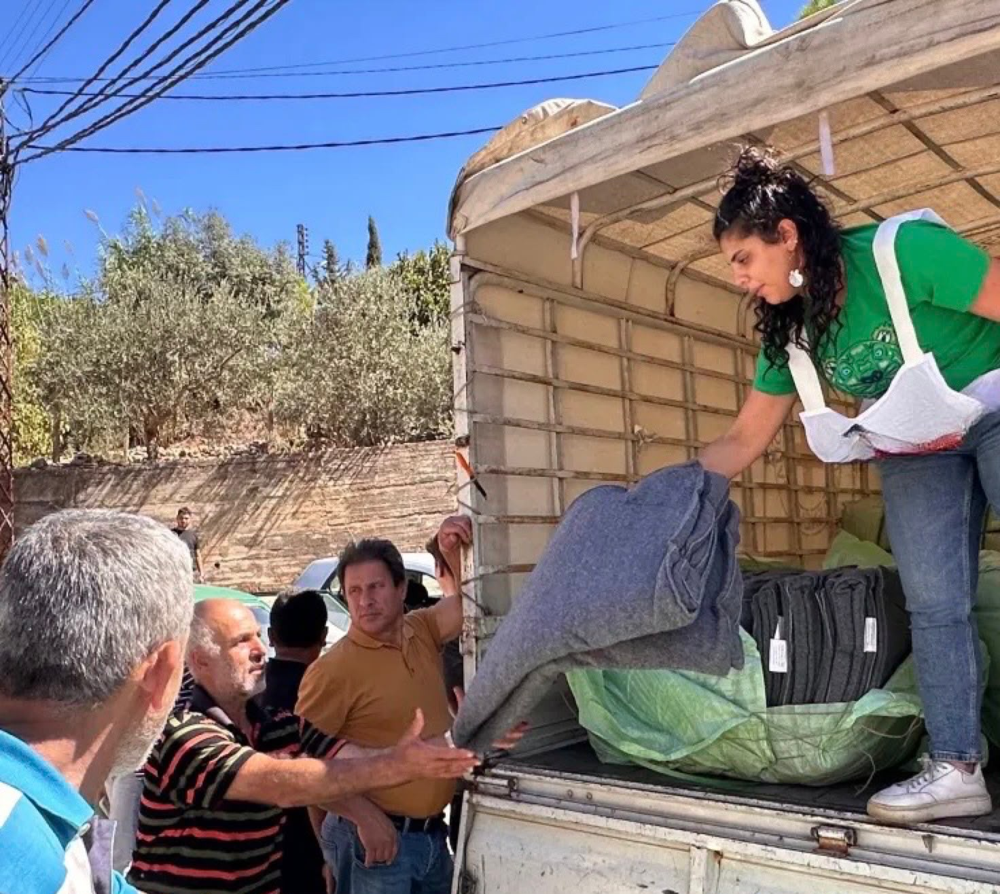
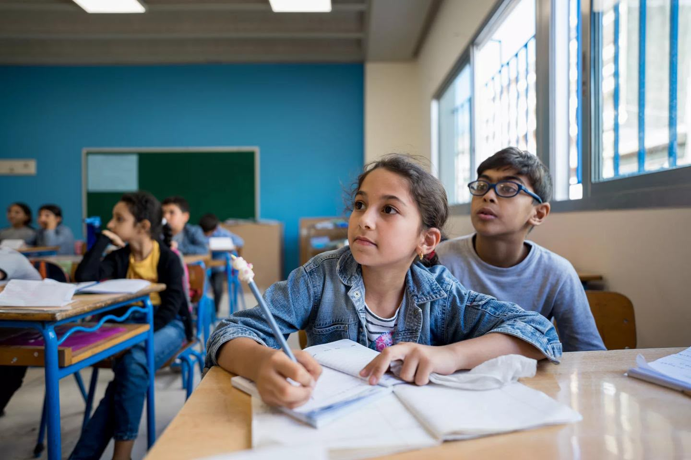
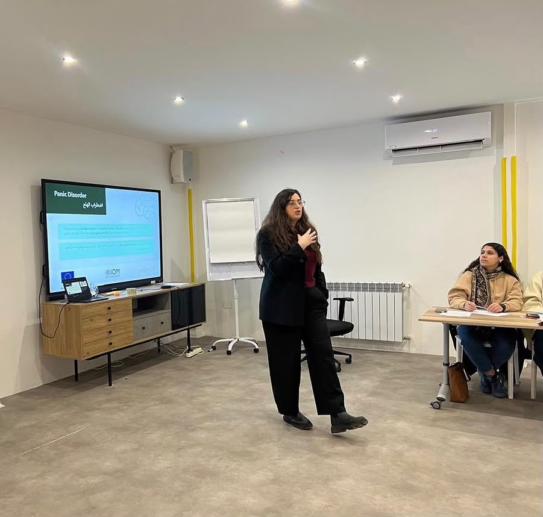
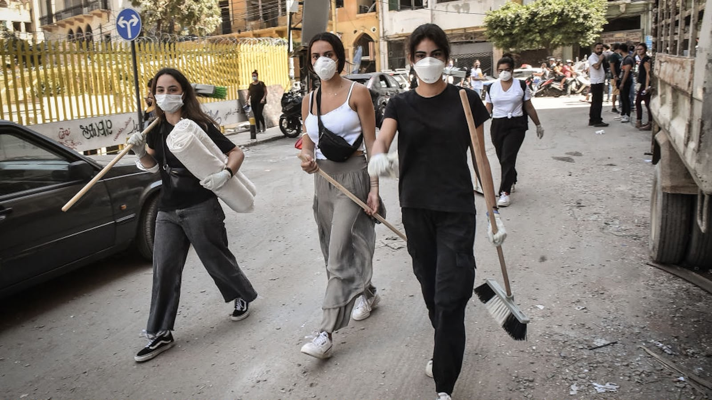
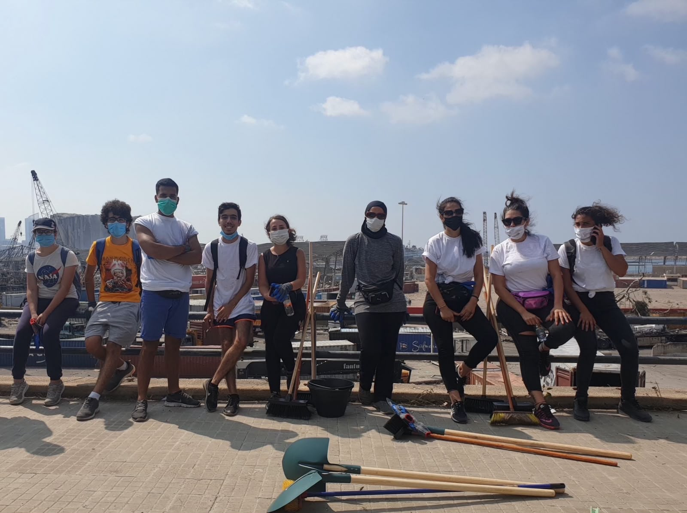
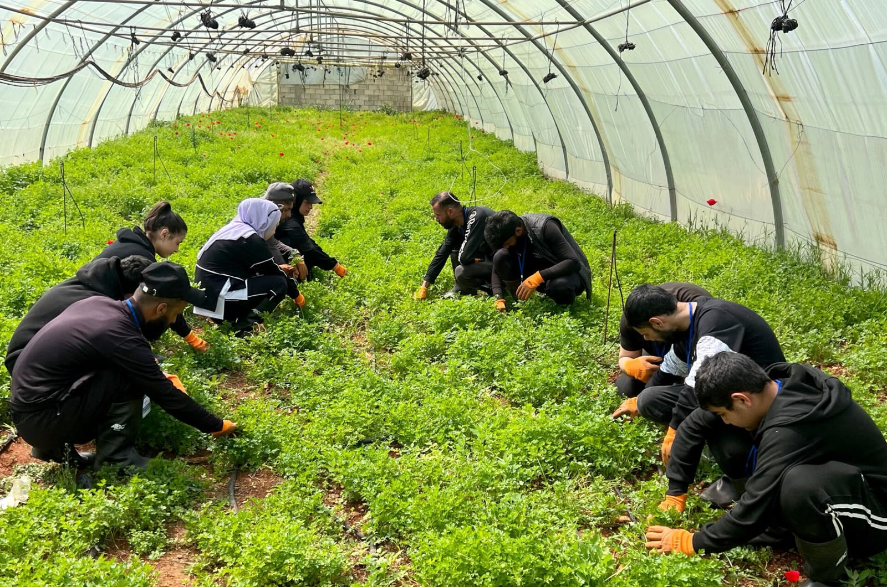
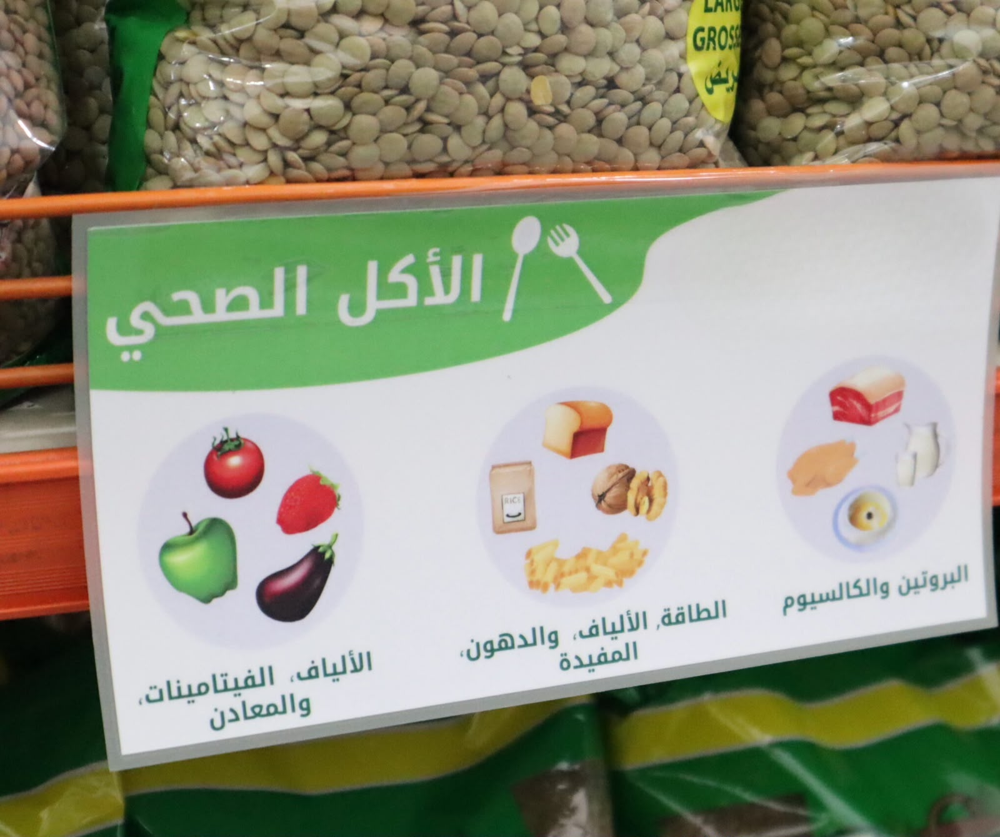

Interventions
LifeLab's interventions address interconnected social, economic and environmental challenges through practical, community-centered action in health, education, protection, livelihoods, agriculture and empowerment.
Humanitarian Assistance

Humanitarian assistance is designed to support individuals and families whose lives and livelihoods have been affected by conflict, displacement, economic hardship or other periods of crisis. LifeLab's approach places dignity, safety and the immediate needs of affected households at the center of the response.
Assistance may include cash-based support that enables households to prioritize their own essential needs. Cash for food can help families secure appropriate food while maintaining choice in what they purchase, while multi-purpose cash assistance can help households manage essential expenses such as rent, healthcare, education and transportation.
Where cash assistance alone is not appropriate or where access to functioning markets is limited, humanitarian responses may also include direct distributions of food and essential non-food items. Depending on identified needs, these can include hygiene materials, cleaning supplies, household essentials, baby items, bedding and other items required to maintain safe and dignified living conditions.
Voucher-based assistance can provide another means of accessing specific goods and services through selected providers. Seasonal needs are also important, particularly during winter, when vulnerable households may require support related to heating, clothing, blankets and other weather-appropriate necessities.
Food assistance can also respond to situations in which households face acute food insecurity or lack adequate facilities to prepare meals. Depending on the context, this can include food parcels, prepared meals and other forms of immediate nutritional support.
Across humanitarian interventions, LifeLab seeks to combine timely assistance with responsible targeting, dignity and consideration of each household's circumstances, while supporting recovery and resilience beyond immediate relief.
Education & Protection

Education is fundamental to individual well-being, social participation and long-term economic development. LifeLab's educational interventions seek to improve access to learning and help children, youth and adults develop the knowledge and skills required to participate more fully in their communities and pursue future opportunities.
Particular attention is given to people facing social or economic barriers to education. Financial hardship, displacement, exclusion and limited access to learning opportunities can increase the risk of children and young people falling behind or leaving education altogether. Addressing these barriers requires more than classroom learning alone.
LifeLab therefore approaches education alongside protection and personal development. Educational support can be complemented by awareness activities, life-skills development, guidance, community outreach and measures intended to create safer and more supportive environments for learners.
Education also plays an important role in employability. Building foundational, technical and transferable skills can help young people make informed decisions, access further education or training and prepare for dignified participation in the labor market.
Through community-based engagement, LifeLab seeks to strengthen the connection between education, protection, opportunity and long-term development so that learning contributes not only to individual progress but also to stronger and more resilient communities.
Social Stability

Communities across Lebanon continue to face pressures created by economic hardship, displacement, limited public resources and unequal access to opportunities. When these pressures persist, they can deepen social divisions and place additional strain on relationships between individuals and communities.
LifeLab's social stability approach focuses on strengthening dialogue, participation and the capacity of communities to identify and respond to shared challenges. This includes creating opportunities for people from different backgrounds to communicate, collaborate and participate constructively in local development.
Interventions may include community mobilization, conflict prevention, mediation and communication activities, leadership development and initiatives that encourage peaceful problem-solving. Particular attention is given to engaging women and youth as active participants in their communities.
LifeLab also recognizes the importance of local organizations and community actors. Strengthening their skills in planning, communication, coordination and community engagement can improve their ability to respond to emerging challenges and contribute to sustainable local solutions.
The objective is to support communities in building trust, strengthening participation and developing practical mechanisms that contribute to social cohesion, responsible local action and longer-term stability.
Environment

Environmental sustainability is closely connected to health, livelihoods, agriculture and community resilience. LifeLab's environmental interventions focus on practical approaches that improve awareness, strengthen responsible resource use and help communities adapt to environmental and climate-related pressures.
Water management is a particularly important area of intervention. Activities can promote responsible water consumption, rainwater harvesting, water-efficient practices and greater awareness of water scarcity among households, farmers, educational institutions and local communities.
In agricultural settings, environmental interventions can include awareness and capacity-building related to efficient irrigation, sustainable water use, safe resource management and environmentally responsible farming practices.
LifeLab also seeks to connect environmental awareness with behavioral change. Educational materials, community activities, workshops and digital communication can help translate environmental knowledge into everyday practices that conserve resources and reduce environmental pressure.
Youth and community participation are particularly important to this work. Environmental volunteering, awareness initiatives, community greening and other participatory activities can give young people an active role in protecting their surroundings and promoting more sustainable communities.
Women Empowerment
Women's participation is essential to sustainable social and economic development. Barriers to education, employment, income generation and participation in decision-making can limit not only individual opportunities but also the development potential of families and communities.
LifeLab approaches women's empowerment through the expansion of knowledge, skills, economic opportunities and meaningful participation. Interventions can combine education, vocational development, livelihood support, entrepreneurship and community engagement according to local needs.
Economic empowerment is an important part of this approach. Supporting women in developing practical and market-relevant skills, improving their access to livelihood opportunities and strengthening their capacity to generate income can contribute to greater financial independence and household resilience.
Empowerment also extends beyond employment. LifeLab seeks to encourage women's participation in community life, leadership and decision-making while supporting environments in which women can express their needs, develop their capabilities and contribute to solutions affecting their communities.
By connecting social and economic empowerment, the aim is to support women as active participants in their own development and in the development of their families and communities.
Youth Empowerment

Young people require more than access to education alone. They also need practical skills, employment pathways, confidence and opportunities to participate meaningfully in economic and community life.
LifeLab's youth-focused approach connects learning with employability and personal development. Areas of intervention can include vocational and technical training, digital competencies, work-readiness, entrepreneurship, work-based learning and support for entry into the labor market.
Training is most effective when it responds to actual opportunities. For this reason, skills development should remain connected to changing labor-market needs, including traditional occupations as well as digital, technology-enabled, environmental and other emerging areas of work.
Youth empowerment also includes transferable skills. Communication, leadership, teamwork, problem-solving and adaptability can strengthen young people's ability to navigate changing economic circumstances and continue developing throughout their working lives.
Beyond employment, LifeLab seeks to encourage civic engagement and community participation, positioning young people as contributors to local development rather than simply recipients of services.
Agriculture

Agriculture remains an important source of livelihoods and local economic activity in many parts of Lebanon. Supporting farmers and agricultural workers can therefore contribute simultaneously to employment, food security, local production and community resilience.
LifeLab's agricultural interventions focus on strengthening the professional and practical capacities needed for productive and sustainable agriculture. Activities can include technical training, agricultural guidance and support for improved farming and resource management practices.
Water-efficient irrigation and responsible use of natural resources are particularly important in the context of environmental pressure and increasing production costs. Training in irrigation techniques, ecological farming and sustainable agricultural practices can help farmers improve efficiency while protecting the resources on which production depends.
Agricultural development also requires stronger links between production and markets. Support for agro-food activities, food processing, business development and market access can help producers move beyond primary production and create additional value from agricultural products.
LifeLab therefore views agriculture not as an isolated sector, but as part of a broader system connecting livelihoods, food security, environmental sustainability, entrepreneurship and local economic development.
Food Security & Livelihoods

Food security requires people to have reliable physical and economic access to sufficient and appropriate food. Economic hardship, unemployment, rising living costs and disruptions to local production can place this access under significant pressure.
LifeLab approaches food security through both immediate support and longer-term livelihood development. Depending on identified needs, food assistance can include food parcels, prepared meals, cash or other mechanisms that help vulnerable households maintain access to essential nutrition.
Longer-term food security depends heavily on people's ability to earn sustainable incomes. Livelihood interventions therefore focus on strengthening skills, employability, income-generating opportunities, entrepreneurship and access to productive work.
Particular attention is given to groups facing greater barriers to economic participation, including young people, women, small-scale farmers and households experiencing socioeconomic vulnerability.
Vocational training and skills development can be linked to market demand so that participants develop competencies relevant to real employment and business opportunities. Support for micro, small and medium-sized enterprises can also contribute to job creation, stronger local markets and more sustainable income.
LifeLab seeks to connect livelihoods interventions with broader value chains, particularly in agriculture and other productive sectors. By linking skills, employment, entrepreneurship and local production, the objective is to move beyond short-term economic relief toward greater resilience and sustainable economic participation.